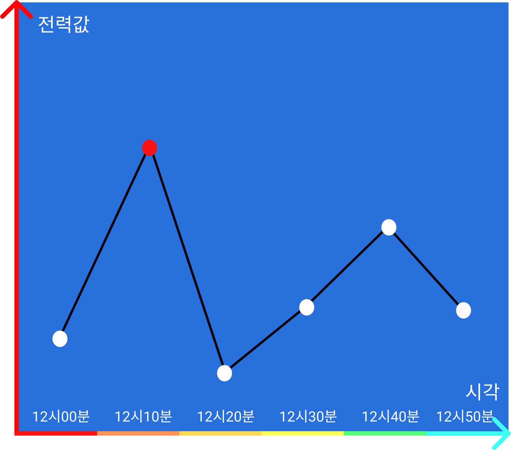
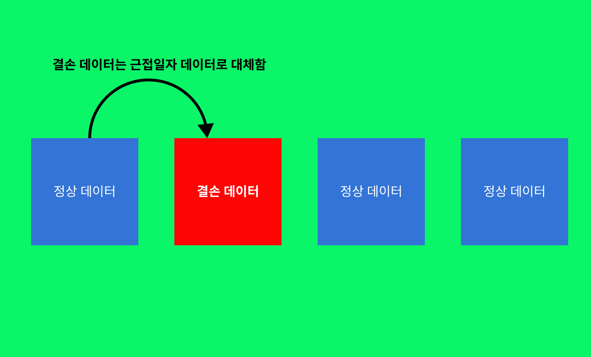
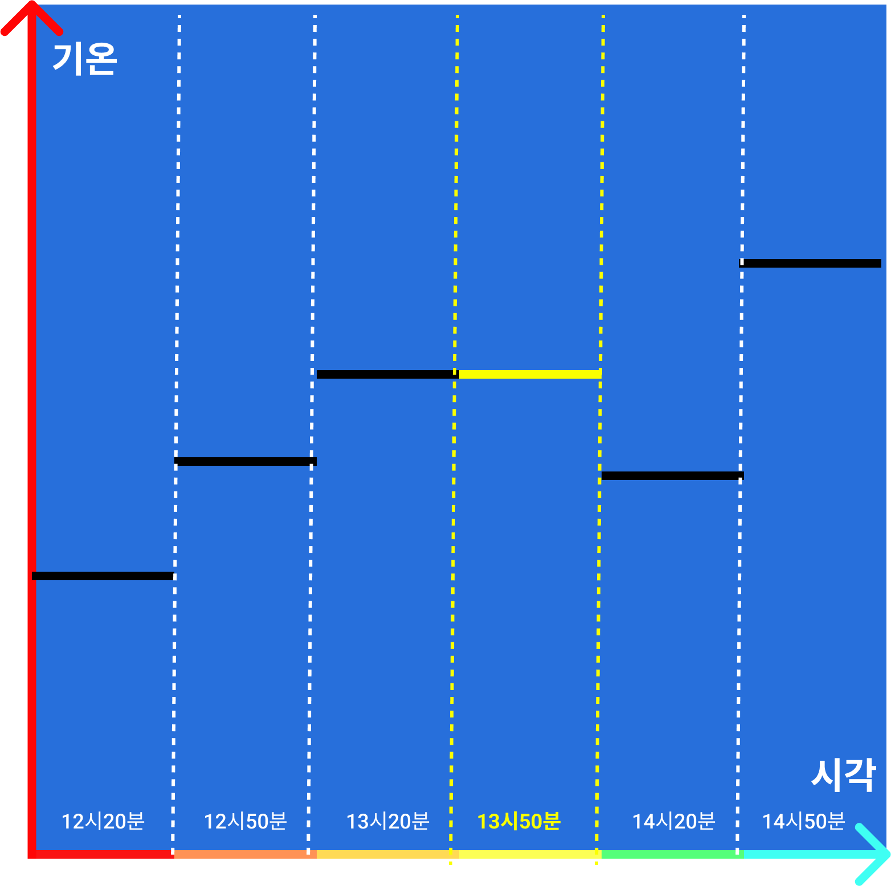

-
데이터를 불러오다 보면 비어있는 값도 있고 엉뚱한 값이 들어가있는 경우도 많습니다.
이 때 필요한 작업이 데이터 전처리입니다.
-
전력 데이터 전처리
전력 데이터에는 6초 간격으로 값들이 저장되어 있습니다.
6초 간격으로 있는 데이터 값을 1시간 단위로 바꾸기 위해
같은 시각(예를 들어 12시 00분 부터 12시 59분 까지 있는 값)에 있는 값들의
최대 전력값을 그 시각의 전력값으로 가져옵니다.
-

▲ 최대값을 쓰는 이유는 시간 당 전력 요금 산정을 최대값으로 하기 때문이다.
-

▲ 딥러닝 학습에서 결손 데이터가 있으면 에러가 발생할 수 있기 때문에 결손값들을 예외 처리해줘야 한다.
-
기온 데이터 전처리
기상 데이터는 30분 간격으로 저장되어있습니다.
기상 값 사이에 결손 데이터가 있을 경우, 이전 시간 대의 기온 값으로 보관합니다.
그리고 같은 시간대의 두 기온의 평균으로 1시간 단위의 기상 값을 데이터로 나타냈습니다.
-

▲ 13시 50분에 비어있는 기온 값을 13시 20분 값을 가지고 와서 보관.